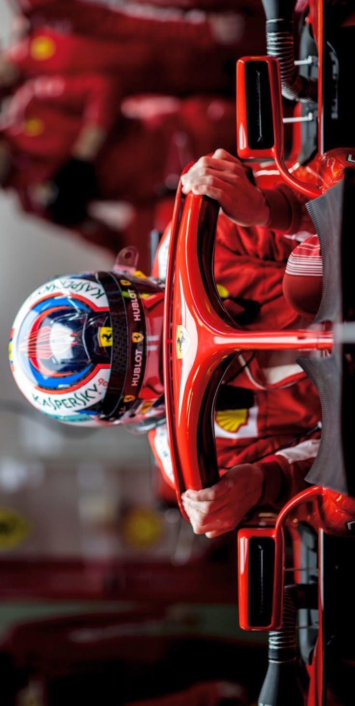

QUESTO NON E UN SITO UFFICALE DELLA F1
I miei contatti:


La Formula 1, spesso abbreviata in F1, è la massima categoria di competizioni automobilistiche su pista a ruote
scoperte.
È considerata il vertice del motorsport per tecnologia, velocità e spettacolarità. Ogni anno si disputa un Campionato Mondiale organizzato dalla FIA (Fédération Internationale de l'Automobile), composto da una serie di gare chiamate Gran Premi, che si svolgono in diverse nazioni del mondo.
Il campionato di Formula 1 è composto da squadre (team) che schierano ciascuna due piloti. Ogni Gran Premio si svolge su
tre giorni:
Venerdì: prove libere per testare la macchina.
Sabato: qualifiche per determinare la griglia di partenza.
Domenica: gara vera e propria.
Durante la gara, i piloti si sfidano su circuiti chiusi e devono completare un certo numero di giri. I punti vengono assegnati in base alla posizione d'arrivo: chi ottiene più punti durante la stagione, vince il campionato piloti e il campionato costruttori (per i team).

La Formula 1 è nata ufficialmente nel 1950, con il primo campionato mondiale. La prima gara si è svolta a Silverstone,
in Inghilterra. Negli anni, la F1 è cresciuta fino a diventare uno degli sport più seguiti al mondo.
Anni '50-'60: dominio di Ferrari, Maserati, e piloti come Fangio.
Anni '70-'80: l'epoca di Lauda, Prost e Senna.
Anni '90-2000: dominio di Michael Schumacher con Ferrari.
Anni 2010: dominio Mercedes con Lewis Hamilton.
Anni recenti: Red Bull con Max Verstappen ha conquistato il vertice.
Un'auto di F1 è un concentrato di tecnologia, aerodinamica e potenza. Ecco le sue caratteristiche principali:
Motore ibrido V6 Turbo: combina potenza termica ed elettrica.
Cambio sequenziale a 8 marce: controllato con palette al volante.
Telaio in fibra di carbonio: leggero e super resistente.
Halo: un dispositivo di sicurezza attorno alla testa del pilota.
Alettone anteriore e posteriore: per massimizzare l'aerodinamica.
Sistema DRS (Drag Reduction System): usato per facilitare i sorpassi.
Pneumatici slick o da bagnato: forniti dalla Pirelli.
Le monoposto pesano circa 800 kg, accelerano da 0 a 100 km/h in meno di 2,5 secondi, e raggiungono velocità superiori ai 350 km/h.
QUESTO NON E UN SITO UFFICALE DELLA F1
I miei contatti: